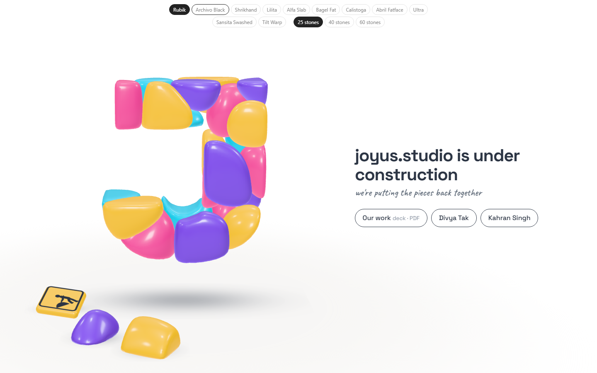
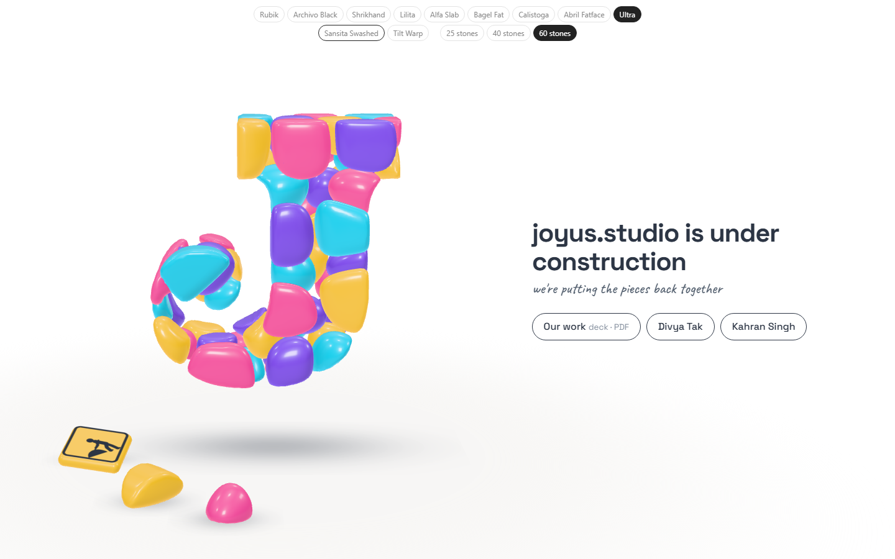

Study 29 · 13 October 2026
More stones
The eleven fonts you kept, each built with 25 (as now), 40 and 60 stones. A J has that many stones in all; the two smallest edge stones lie on the floor. Switch at the top of the page.
Open the page (fonts and stone counts at the top)

Every font, three counts
Under each: how well the stones overlap the font's own J (5 random builds, 1 = exact), and the stones that made it into the build.
25 stones40 stones60 stones
Other breaks
Three more builds each for Calistoga, Abril and Sansita Swashed, at 25 stones. Which stones fall out and where the cuts land follow the seed; the page draws a new one every visit, and every font change.
Open
- How many stones: 25, 40 or 60 (or one count for some fonts and another for others).
- Tilt Warp: you didn't say; it's in until you do.
- Which break for Calistoga, Abril, Sansita: say the letter (a, b, c) or the seed on the page.
Scores: legible-fonts.json (33 rows). Test: page-test.mjs, 44 checks in a browser, 33 + 9 shots; read by check.cjs.